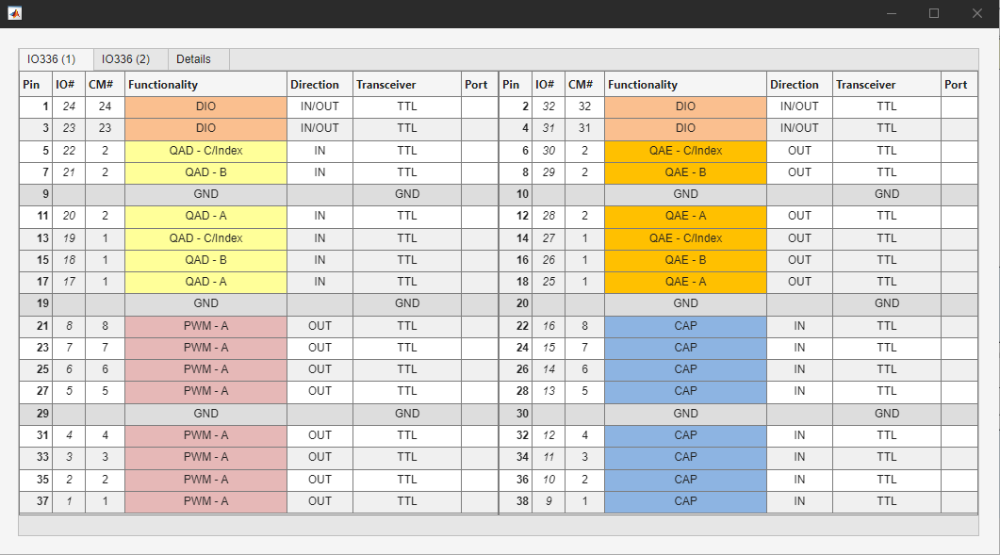
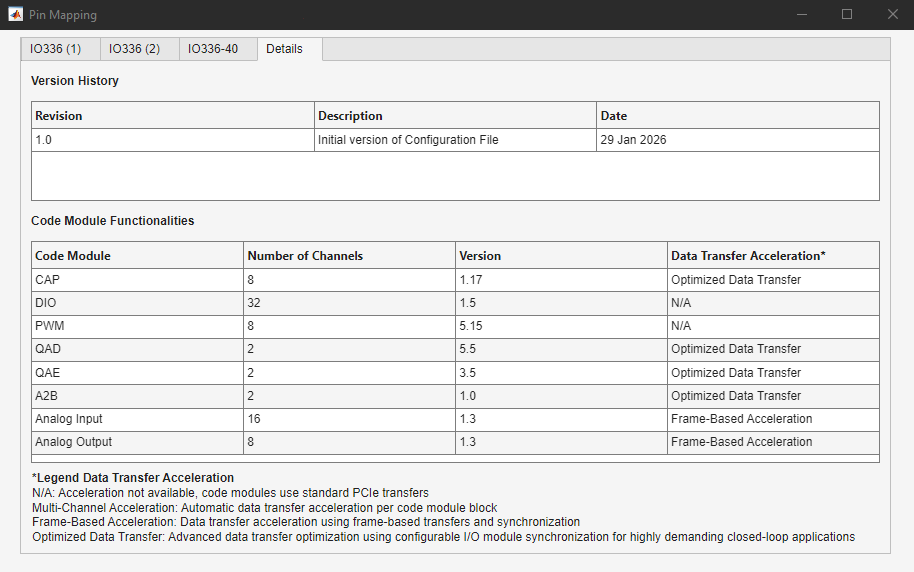

Getting Started
Getting Started — Working with configuration files
Introduction
This section provides guidelines on installing and using configuration files for configurable I/O modules. If you are interested in purchasing a customized configuration file with the functionality you require, then please contact Speedgoat.
![[Important]](images/important.png) | Important |
|---|---|
If your configuration file .zip contains a .pdf, then refer to this document for additional information about your specific configuration file. |
Installation
Install the configuration file after installing the MathWorks® tool chain and the Speedgoat I/O Blockset. The steps are as follows:
Download the configuration file archive from the Speedgoat Customer Portal. You can find the file under Downloads, in the Software section
Start MATLAB® and navigate to the previously downloaded archive file. Double-click the archive file in MATLAB to unzip it. The archive contains a test model, the installer and the configuration file (*.mat)
Install/use the configuration file
Preferred option: Enter the following command in the MATLAB command window:
configuration_file_installer
This will install your configuration file in the Speedgoat installation structure, and allow you to use it in every model without having to manually search for the file
Copy the file to a location of your choice. In this case, you must search for the configuration file in the Setup block mask using the Browse button
Place the file in the current working directory of your MATLAB session next to your model. The configuration file will automatically appear in the drop-down list of the Setup block mask, however, it will not be available if you change the directory
If you start a new model, select the configuration file in the IO3xx Setup v3 driver block. Otherwise, use the test model provided as a starting point, which includes the corresponding configuration file preconfigured
Test Model
A dedicated test model is provided with every configuration file to test the custom set of functionalities. The model contains a preconfigured setup block and at least one block for every implemented functionality. Note that this test model only tests I/O channels for which a loopback test can be performed. Functions that cannot be tested in a loopback setup are commented out.
To run the model on your target machine, the terminal board provided must be wired as indicated in the documented test wiring within the Simulink model.
![[Note]](images/note.png) | Note |
|---|---|
The test wiring for older test models is documented in the PDF file provided. |
Setup a Model
When setting up a new model, the test model provided is a good starting point. It contains a preconfigured setup block that already uses the configuration file. In addition, all compatible blocks are included in the model with a default setup. You can then modify the model for your needs and specific application use cases.
By default, the Module ID of the blocks is set to 1. You must configure the Module IDs of all the blocks depending on your target machine. Please refer to the Setup block documentation on how to distribute Module IDs if your target machine contains multiple configurable I/O modules.
Update the model (Ctrl + D) to ensure everything is set up correctly. Any conflicts or misconfigured blocks will trigger an error.
Implemented Functionality
You can check the implemented functionality of your configuration files in multiple ways:
In any Simulink model, the Pin Mapping button in the Setup block mask will open a window showing the pin mapping table and other details (see below) such as the version history or the individual versions of the functionalities.
Enter the following command in the MATLAB command window to obtain a list of all the installed configuration files:
speedgoat.version
You can then click the hyperlink to open a window containing the pin mapping table and other information as shown below.
Pin Mapping
The Pin Mapping window illustrates the placement of the implemented functionality on your terminal board. The following is an example of an IO336-325k with a custom pin mapping including PWM Generation, PWM Capture, Quadrature Encoder and Quadrature Decoder functionality.

Details
The Details tab shows additional information about your configuration file. The first table shows the Version History of the currently selected configuration file, including updates, bug fixes and other historical changes.
The second table shows more information about the implemented functionalities (code modules), such as the number of implemented channels, the version for reference, and the implemented data transfer acceleration.

Data Transfer Acceleration
N/A: The code module does not support any acceleration and all the transfers are done over PCIe.
Multi-Channel Acceleration: Data transfers from the same block are combined into accelerated DMA data transfers. To optimize the performance, all the channels used in the model should be placed into the same block.
Important Only blocks running with the fastest rate of the model (base rate) will be able to use the acceleration.
Frame-Based Acceleration: The code module (e.g. Analog Input or Output) can be configured to use frame mode. In this setup, the data for multiple samples is combined into a frame and transferred as a continuous DMA stream between the CPU and the configurable I/O module. When combined with the corresponding interrupt, the Simulink model can be triggered once all the data is ready: the DMA transfers take place in the background.
Optimized Data Transfer: When Optimize Data Transfer is enabled in the setup block, all the data transfers of these code modules between the configurable I/O module and the CPU are combined into a single transfer. Instead of using the CPU timer, the model will be triggered by the configurable I/O module as soon all the read data is completely transferred to the CPU. When the model executes, all data for computation will already be present, which reduces the TET. After model execution, the write data is also written to the configurable I/O module in the background.
Important Only blocks running with the fastest rate of the model (base rate) will be used for the optimized data transfer
Note When Optimize Data Transfer is disabled, the code modules supporting optimize data transfer still use Multi-Channel Acceleration